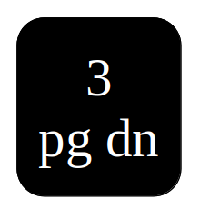

Preprints
- Takashi Furuya, Pu-Zhao Kow and Jenn-Nan Wang, Consistency of the Bayes method for the inverse scattering problem, preprint (http://www.math.ntu.edu.tw), November 4, 2023.
- Pu-Zhao Kow, Mikko Salo and Henrik Shahgholian, On scattering behavior of corner domains with anisotropic inhomogeneities, arXiv:2309.11213.
- Joonas Ilmavirta, Pu-Zhao Kow and Suman Kumar Sahoo, Unique continuation for the momentum ray transform, arXiv:2304.00327
Publications
- Pu-Zhao Kow, Mikko Salo and Henrik Shahgholian, A minimization problem with free boundary and its application to inverse scattering problems, to appear in Interfaces Free Bound., EMS Press, arXiv:2303.12605.
- Pu-Zhao Kow, Simon Larson, Mikko Salo and Henrik Shahgholian, Quadrature domains for the Helmholtz equation with applications to non-scattering phenomena, Potential Anal. (2022), early online, doi:10.1007/s11118-022-10054-5, JYX:84718. The results in the appendix are well-known, and the proofs can found at arXiv:2204.13934.
- Pu-Zhao Kow, Mikko Salo and Henrik Shahgholian, On positivity sets for Helmholtz solutions, Vietnam J. Math. 51 (2023), no. 4, 985-994, MR4669027, doi:10.1007/s10013-023-00646-y, JYX:88937, arXiv:2301.04965, special issue dedicated to Carlos E. Kenig on the occation of his 70th birthday.
- Pu-Zhao Kow and Jenn-Nan Wang, Inverse problems for some fractional equations with general nonlinearity, Res. Math. Sci. 10 (2023), no. 4, Paper No. 45, 33 pages, MR4656890, Zbl:7771748, doi:10.1007/s40687-023-00409-8.
- Pu-Zhao Kow, Shiqi Ma and Suman Kumar Sahoo, An inverse problem for semilinear equations involving the fractional Laplacian, Inverse Problems 39 (2023), no. 9, Paper No. 095006, 27 pages, MR4629230, Zbl:7749164, doi:10.1088/1361-6420/ace9f4, arXiv:2201.05407.
- Pu-Zhao Kow and Jenn-Nan Wang, Landis-type conjecture for the half-Laplacian, Proc. Amer. Math. Soc. 151 (2023), no. 7, 2951-2962, MR4579369, Zbl:7679782, doi:10.1090/proc/16093, JYX:86915, arXiv:2106.06120.
- Pu-Zhao Kow, On Landis Conjecture for the Fractional Schrödinger Equation, J. Spectr. Theory 12 (2022), no. 3, 1023-1077, MR4578344, Zbl:1514.35462, doi:10.4171/jst/433, JYX:86580 ,arXiv:1905.01885.
- Pu-Zhao Kow, Yi-Hsuan Lin and Jenn-Nan Wang, The Calderón problem for the fractional wave equation: Uniqueness and optimal stability, SIAM J. Math. Anal. 54 (2022), no. 3, 3379-3419, MR4434352, Zbl:1492.35427, doi:10.1137/21M1444941, JYX:85312.
- Pu-Zhao Kow and Jenn-Nan Wang, Refined instability estimates for some inverse problems, Inverse Probl. Imaging 16 (2022), no. 6, 1619-1642, special issue dedicated to the memory of Victor Isakov, MR4520377, Zbl:07675881, doi:10.3934/ipi.2022017, JYX:83337.
- Pu-Zhao Kow and Masato Kimura, The Lewy-Stampacchia Inequality for Fractional Laplacian and Its Application to Anomalous Unidirectional Diffusion Equations, Discrete Contin. Dyn. Syst. Ser. B 27 (2022), no. 6, 2935-2957, MR4430602, Zbl:1490.35520, doi:10.3934/dcdsb.2021167, arXiv:1909.00588.
- Pu-Zhao Kow, Gunther Uhlmann and Jenn-Nan Wang, Optimality of increasing stability for an inverse boundary value problem, SIAM J. Math. Anal. 53 (2021), no. 6, 7062-7080, MR4354999, Zbl:1483.35086, doi:10.1137/21M1402169, JYX:79644, arXiv:2102.11532.
- Pu-Zhao Kow and Jenn-Nan Wang, On the characterization of nonradiating sources for the elastic waves in anisotropic inhomogeneous media, SIAM J. Appl. Math. 81 (2021), no. 4, 1530-1551, MR4295059, Zbl:1473.35198, doi:10.1137/20M1386293.
- Pu-Zhao Kow and Jenn-Nan Wang, Reconstruction of an impenetrable obstacle in anisotropic inhomogeneous background, IMA J. Appl. Math. 86 (2021), no. 2, 320-348, Inst. Math. Appl., MR4246858, Zbl:1471.76063, doi:10.1093/imamat/hxab002 [Corrigendum doi:10.1093/imamat/hxab046].
- Fioralba Cakoni, Pu-Zhao Kow and Jenn-Nan Wang, The interior transmission eigenvalue problem for elastic waves in media with obstacles, Inverse Probl. Imaging 15 (2021), no. 3, 445-474, MR4235665, Zbl:1467.35225, doi:10.3934/ipi.2020075.
- Pu-Zhao Kow and Ching-Lung Lin, On decay rate of solutions for the stationary Navier-Stokes equation in an exterior domain, J. Differential Equations 266 (2019), 3279-3309, MR3912683, Zbl:1435.35279, doi:10.1016/j.jde.2018.09.002.
Unpublished Manuscripts
- Pu-Zhao Kow and Jenn-Nan Wang, Unique continuation from the infinity for the fractional Laplacian with a drift term, unpublished manuscript.
- Pu-Zhao Kow and Jenn-Nan Wang, Strict monotonicity of eigenvalues and unique continuation for spectral fractional elliptic operators, unpublished manuscript.
Doctoral Dissertation
Pu-Zhao Kow. Unique Continuation Property of the Fractional Elliptic Operators and Applications. PhD thesis, National Taiwan University, College of Science, Department of Mathematics, 2021,
doi:10.6342/NTU202100933. Thesis defense [
pdf format |
svg format ]
- previous slide: or or
- next slide: or or 